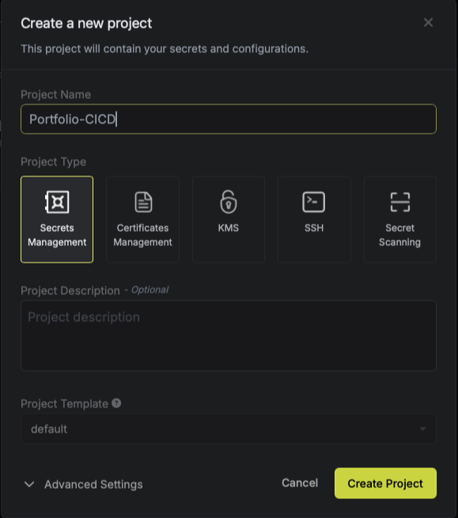
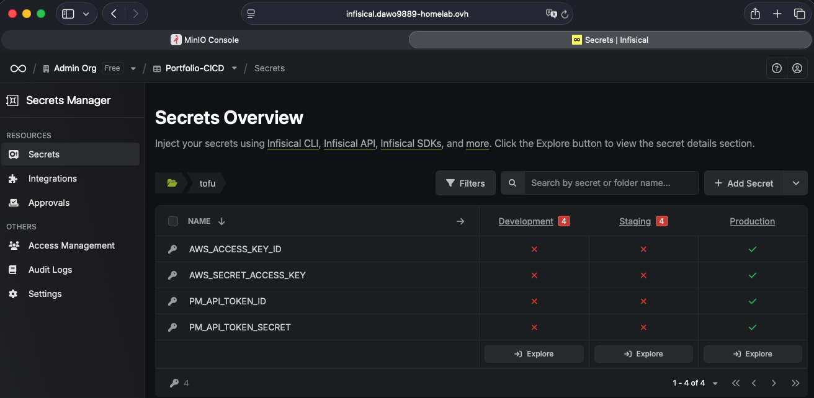

Infisical Self-Hosted Setup¶
How I set up Infisical for managing secrets in this project.
What It Is¶
Infisical is an open-source secrets vault. Self-hosting it means I control where the data lives and who has access to it. This setup uses Postgres for storage and Redis for caching.
Reference: https://infisical.com/docs/self-hosting/deployment-options/docker-compose
Docker Compose Setup¶
Save this as docker-compose.yml:
version: "3"
services:
backend:
image: infisical/infisical:latest-postgres
container_name: infisical-backend
restart: unless-stopped
depends_on:
db:
condition: service_healthy
redis:
condition: service_started
env_file: .env
pull_policy: always
ports:
- "80:8080" # Expose internal 8080 on host 80 (put behind HTTPS proxy externally)
environment:
- NODE_ENV=production
networks:
- infisical
redis:
image: redis
container_name: infisical-redis
restart: always
environment:
- ALLOW_EMPTY_PASSWORD=no
networks:
- infisical
volumes:
- redis_data:/data
db:
image: postgres:14-alpine
container_name: infisical-db
restart: always
env_file: .env
volumes:
- pg_data:/var/lib/postgresql/data
networks:
- infisical
healthcheck:
test: "pg_isready --username=${POSTGRES_USER} && psql --username=${POSTGRES_USER} --list"
interval: 5s
timeout: 10s
retries: 10
volumes:
pg_data:
redis_data:
networks:
infisical:
I'm exposing port 80 on the host, but in production you'd want to put this behind a reverse proxy with HTTPS.
Environment Variables¶
Create a .env file in the same directory:
# Encryption key (16 bytes hex => 32 hex chars)
ENCRYPTION_KEY=REPLACE_ME
# JWT signing secret (32 bytes base64)
AUTH_SECRET=REPLACE_ME
# Postgres
POSTGRES_USER=infisical
POSTGRES_PASSWORD=infisical
POSTGRES_DB=infisical
DB_CONNECTION_URI=postgres://${POSTGRES_USER}:${POSTGRES_PASSWORD}@db:5432/${POSTGRES_DB}
# Redis
REDIS_URL=redis://redis:6379
# Public site URL (HTTPS in production)
SITE_URL=https://infisical.example.com
Important: Don't use these sample values in production. Generate actual secure keys and store the originals somewhere safe.
Generating Keys¶
# 16-byte hex (32 characters) for ENCRYPTION_KEY
openssl rand -hex 16
# 32-byte base64 for AUTH_SECRET
openssl rand -base64 32
Starting It Up¶
Initial Setup¶
Visit the URL (either http://<HOST> or behind your HTTPS proxy) and create your first organization and project.

Create environments (like dev and prod) and define paths where secrets will live.
Storing OpenTofu Secrets¶
Create a path in Infisical for your Tofu/Terraform secrets (I use /tofu). Add the secrets that OpenTofu needs - provider credentials, backend config, etc.

CLI Setup¶
Reference: https://infisical.com/docs/cli/usage
Install the CLI:
Login (opens browser or prompts for token):
Initialize in your project directory if needed:
Using With OpenTofu/Terraform¶
Wrap your commands with infisical run to inject secrets as environment variables:
infisical run --env=prod --path=/tofu -- tofu init -reconfigure
infisical run --env=prod --path=/tofu -- tofu plan
infisical run --env=prod --path=/tofu -- tofu apply
What the flags mean:
--env: Which Infisical environment to use (prod/dev/staging)--path: Where the secrets are stored in Infisical
Backups¶
Backing up Postgres:
# Backup
docker exec infisical-db pg_dump -U infisical infisical > backup.sql
# Restore
docker exec -i infisical-db psql -U infisical -d infisical < backup.sql
Redis is just for caching, so the real data lives in Postgres.
Upgrading¶
Check the release notes before upgrading between major versions.